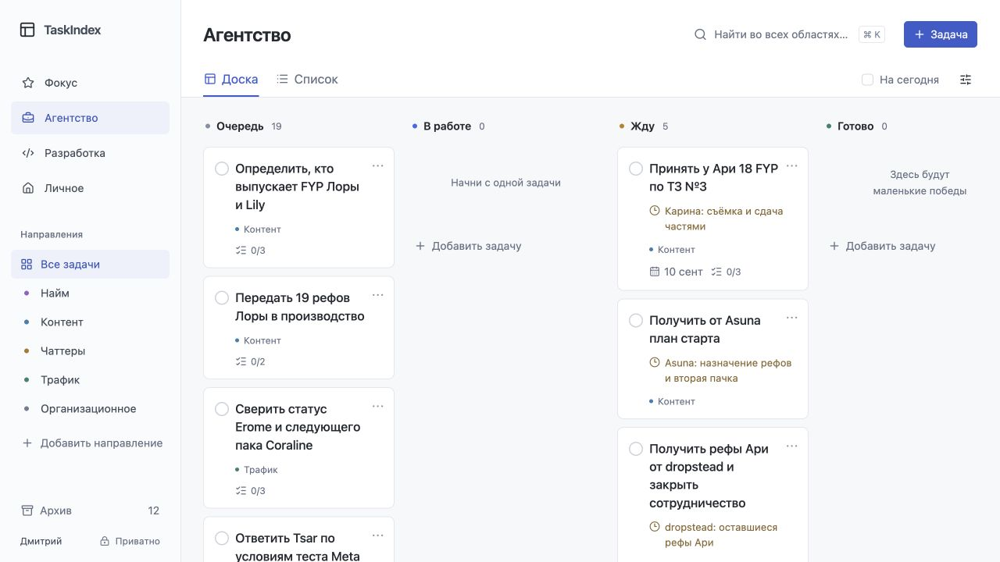

Как это помогает
КомпромиссДемонстрационные задачи. Клики меняют только макет; перезагрузка сбрасывает изменения.

Снимок текущего локального интерфейса, 8 сентября. Четыре варианта рядом — отдельные демонстрации.